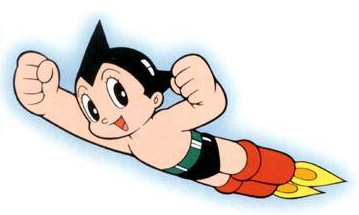
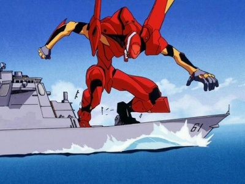
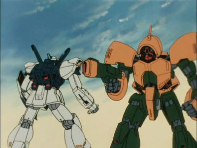
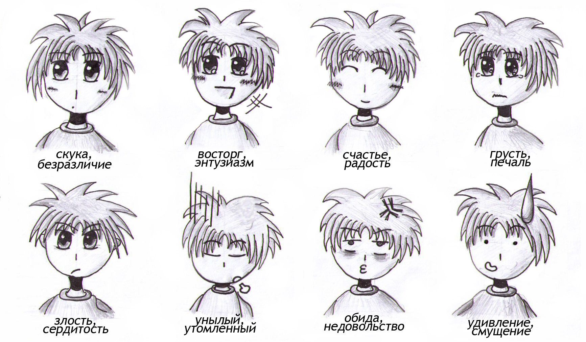

Что такое аниме?
Аниме (от англ. animation — анимация) японская анимация. В отличие от мультфильмов других стран, предназначенных в основном для просмотра детьми, большая часть выпускаемого аниме рассчитана на подростковую и взрослую аудитории, и во многом за счёт этого имеет высокую популярность в мире. Аниме отличается характерной манерой отрисовки персонажей и фонов. Издаётся в форме телевизионных сериалов, а также фильмов, распространяемых на видеоносителях или предназначенных для кинопоказа. Сюжеты могут описывать множество персонажей, отличаться разнообразием мест и эпох, жанров и стилей.
История
История аниме берёт начало в XX веке, когда японские кинорежиссёры начинают первые эксперименты с техниками мультипликации, изобретёнными на Западе. Старейшая из известных сохранившихся японских анимаций — Katsudo Shashin длится всего 3 секунды. Одним из самых первых аниме стал продемонстрированный в 1917 году двухминутный комедийный фильм «Namakura-gatana», в котором самурай собирается испытать свой новый меч, но терпит поражение от горожанина. Первопроходцами в области японской мультипликации стали Симокава Отэн, Дзюнъити Коти и Сэитаро Китаяма. Одним из наиболее популярных и доступных методов на тот момент была техника вырезной анимации, её применяли такие аниматоры, как Санаэ Ямамото, Ясудзи Мурата и Ноборо Офудзи. Позднее распространилась также техника аппликационной анимации. Успеха в развитии техники анимации добились и другие мультипликаторы, такие как Кэндзо Масаока и Мицуё Сэо, использовавшие, в частности, анимационные фильмы в образовательных и пропагандистских целях. Первым звуковым аниме стал снятый Масаокой в 1933 году короткометражный фильм Chikara to Onna no Yo no Naka. К 1940 году начали образовываться организации мультипликаторов и художников, такие как Shin Mangaha Shudan и Shin Nippon Mangaka. В то время аниме активно использовалось в качестве средства государственной пропаганды. Одним из первых полнометражных анимационных фильмов стал снятый Мицуё Сэо в 1945 году Momotarou: Umi no Shinpei; спонсорскую поддержку при создании фильма оказал Императорский флот Японии.
Основоположником традиций современного аниме стал Осаму Тэдзука — он заложил основы того, что позднее преобразовалось в современные аниме-сериалы. Например, Тэдзука заимствовал у Диснея и развил манеру использования больших глаз персонажей для передачи эмоций; именно под его руководством возникали первые произведения, которые можно отнести к ранним аниме. Первой работой Тэдзуки стала манга Shintakarajima. Впоследствии он создал мангу под названием Tetsuwan Atomu (Astro Boy), которая и принесла ему успех. К 1970-м годам популярность манги заметно возросла, многие произведения были анимированы. Тэдзуку благодаря его работам часто называли «легендой» и «богом манги и аниме».
За почти вековую историю аниме прошло долгий путь развития от первых экспериментов в анимации, фильмов Тэдзуки до нынешней огромной популярности по всему миру. С годами сюжеты аниме, первоначально рассчитанного на детей, становились всё сложнее, обсуждаемые проблемы всё серьёзней.
Появились аниме-сериалы, рассчитанные на подростковую аудиторию — юношей и девушек старше четырнадцати лет. Эти сериалы нашли поклонников и среди взрослых, в редких случаях вплоть до преклонных лет. В своём развитии аниме немного отставало от манги, которая зародилась на несколько лет раньше и к тому времени уже завоевала популярность среди всех кругов населения Японии.
Сегодня аниме представляет собой уникальный культурный пласт, объединяющий как сериалы для детей (жанр кодомо) — аниме в его изначальном понимании, так и подростковые произведения, зачастую, достаточно серьёзные и для просмотра взрослыми — сёнэн (аниме для юношей), сёдзё (аниме для девушек) и даже полноценное «взрослое» аниме (сэйнэн и дзёсэй). В отдельное направление выделились хентай — аниме порнографической направленности, яой и юри — аниме, повествующее об отношениях (как правило романтических) между людьми одного пола — мужчинами либо женщинами соответственно.
Вершиной аниме принято считать работы режиссёра Хаяо Миядзаки. Его «Унесенные призраками» стали первым и единственным анимационным фильмом, получившим премию Берлинского кинофестиваля, как «Лучший фильм», а не «Лучший мультфильм».
Особенности
Анимация Японии отличается от анимации других стран, в первую очередь, тем, что представляет собою развивающийся замкнутый культурный пласт, включающий в себя множество уникальных сюжетных и идейных символов, шаблонов, стереотипов и типажей. Простейшими примерами могут служить специфические для аниме жанры, вроде меха, живущие по своим собственным законам, или находящие частое отражение в аниме элементы японской культуры.
Аниме выделяется среди мультипликации других стран своей востребованностью в японском обществе. Это обуславливает и общая направленность определённой доли произведений на более взрослую аудиторию, что выражается в большем внимании к философской и идеологической составляющим, преобладании «взрослых» мотивов в тематике, и, в том числе, меньшей табуированностью тем секса и насилия в культуре в целом.
Большая часть аниме создаётся с расчётом на конкретную, временами довольно узкую целевую аудиторию. Критериями деления могут являться пол, возраст, психологический тип зрителя. Выбранный таким образом метажанр задаёт общую направленность произведения, влияя на его сюжет, идеи и даже манеру изображения. Детское (кодомо) аниме составляет большую часть от всей анимационной продукции, выпускаемой на территории Японии, но за пределами страны популярны более «взрослые» произведения.
Производство
Аниме обычно создаётся на небольших анимационных студиях, а его производство финансируется за счёт более крупных компаний. На создание телесериалов обычно отводятся небольшие сроки, поэтому мелкие ошибки аниматорами не учитываются. При создании полнометражной анимации имеет место более серьёзный контроль качества, но сроки на производство при этом более свободны. Заказ на определённое аниме формируют продюсеры. Режиссёр аниме обычно отвечает за художественное оформление мультфильма, в его обязанности также входят подбор актёров озвучивания и создание режиссёрской раскадровки, графически описывающей ключевые моменты. В проектах обычно участвует режиссёр-аниматор, который координирует работу групп аниматоров. Образом персонажей аниме занимается дизайнер персонажей, часто являющийся одновременно главным аниматором. Частота кадров японских мультсериалов обычно составляет от 8 до 12 кадров в секунду, но более совершенные анимационные фильмы могут сниматься с частотой 24 кадра в секунду. При работе с графикой студиями активно используются компьютерные технологии. Как только завершается работа над анимационным рядом, начинают работу актёры озвучивания.
В Японии находится более 430 аниме-студий. К наиболее крупным из них относятся Bones, Gainax, Gonzo, Madhouse, Studio Pierrot, Toei Animation и др. В целях повышения эффективности работы над сложными проектами студии иногда работают вместе. Если аниме претендует на мировую известность, то его выход в свет практически всегда сопровождается выпуском различной сопутствующей продукции: игрушек, предметов одежды с изображениями героев и т. п. Именно продажа сопутствующих товаров зачастую приносит производителям больше прибыли, чем непосредственно прокат аниме.